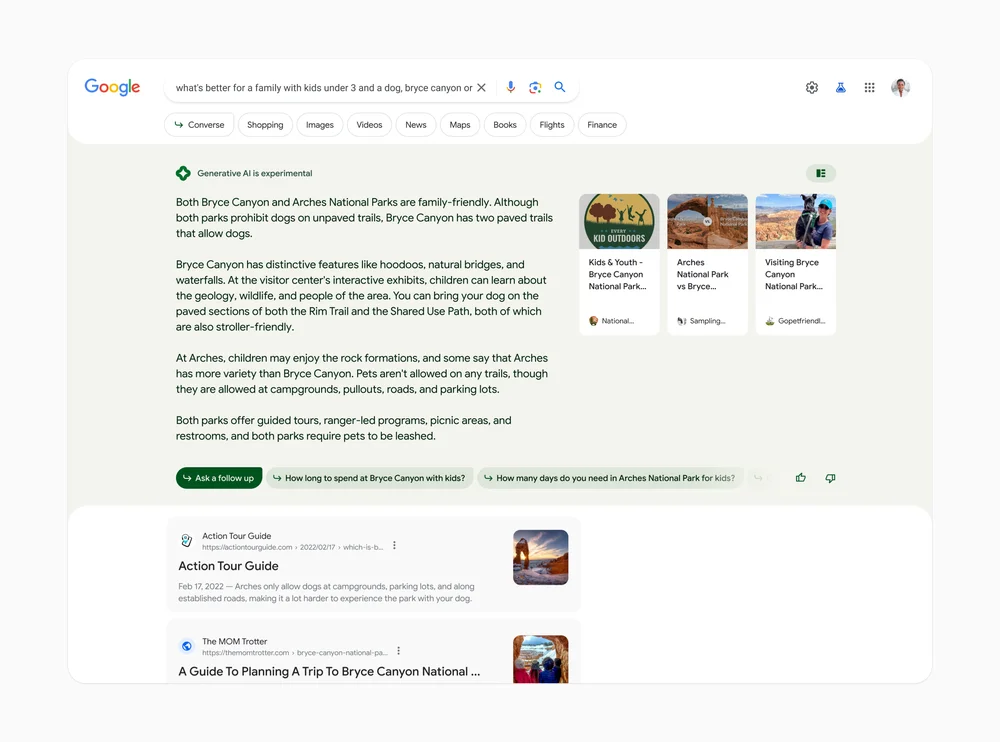

Aprende cómo activar la IA de Google antes que nadie

Google ha ido poco a poco arrancando con el terreno de las IA para hacer frente en este sector del mercado que cada vez esta más en auge y parece solo ir a más, como ChatGPT o Bing Chat. Hace una semana hablamos sobre la integración de Gemini en Bard, la cual le daba un impulso extra a su chat con IA para poder ser más competitivo.
La inteligencia artificial de la que vamos a hablar es una diferente, la cual Google quiere adaptar a su buscador para darnos más información de la búsqueda que realicemos. Quédate para descubrir cómo será y cómo activarla.
Así es la nueva IA que Google prepara para su buscador
La nueva IA fue lanzada en Latinoamérica, la cual busca proporcionar la información de una manera más natural e intuitiva de lo que busques en el navegador.
Por ahora, el acceso a esta nueva IA generativa llamada “Experiencia Generativa de Búsqueda”, está limitada a unos pocos idiomas y países. Entre los idiomas encontramos; Español, Portugués e inglés. En cuanto a los países, la encontramos en; Chile, Argentina, Brasil, Perú, México, Uruguay y Colombia.
En cuanto a su funcionalidad, es muy sencilla. Cuando un usuario busque cualquier cosa en el buscador, aparecerán en la parte superior respuestas basadas por IA a la búsqueda realizada. Estas respuestas contienen enlaces e información de interés. Además de permitir añadir sugerencias de información y enlaces.

Esto impulsará el buscador de Google a un nuevo nivel y más alto, ya que ahora las búsquedas serán mas detalladas y será más fácil encontrar más información y más completa de antes. Algunas de sus novedades a destacar:
- Resúmenes mediante IA: Nos mostrará una descripción general de la búsqueda.
- Resultados confiables: Nos mostrará fuentes de información comprobadas mediante opciones que son fiables.
- Modo conversacional: Tendrás respuestas instantáneas y podrás explorar sobre ese tema haciendo nuevas preguntas que te dirijan a nuevas fuentes. Todo impulsado por IA.
Cómo activar la nueva IA de Google
- Activa una VPN que esté ubicada en América
- Dirígete a labs.google.com/search.
- Selecciona “Cuando esta opción está activada, puede aparecer SGE al hacer búsquedas” y aprieta en “Probar con un ejemplo” para aprender a usar la nueva IA.
También hay que recalcar que actualmente solo puedes activarla desde Chrome de escritorio, hasta que se despliegue en dispositivos móviles en los próximos días.